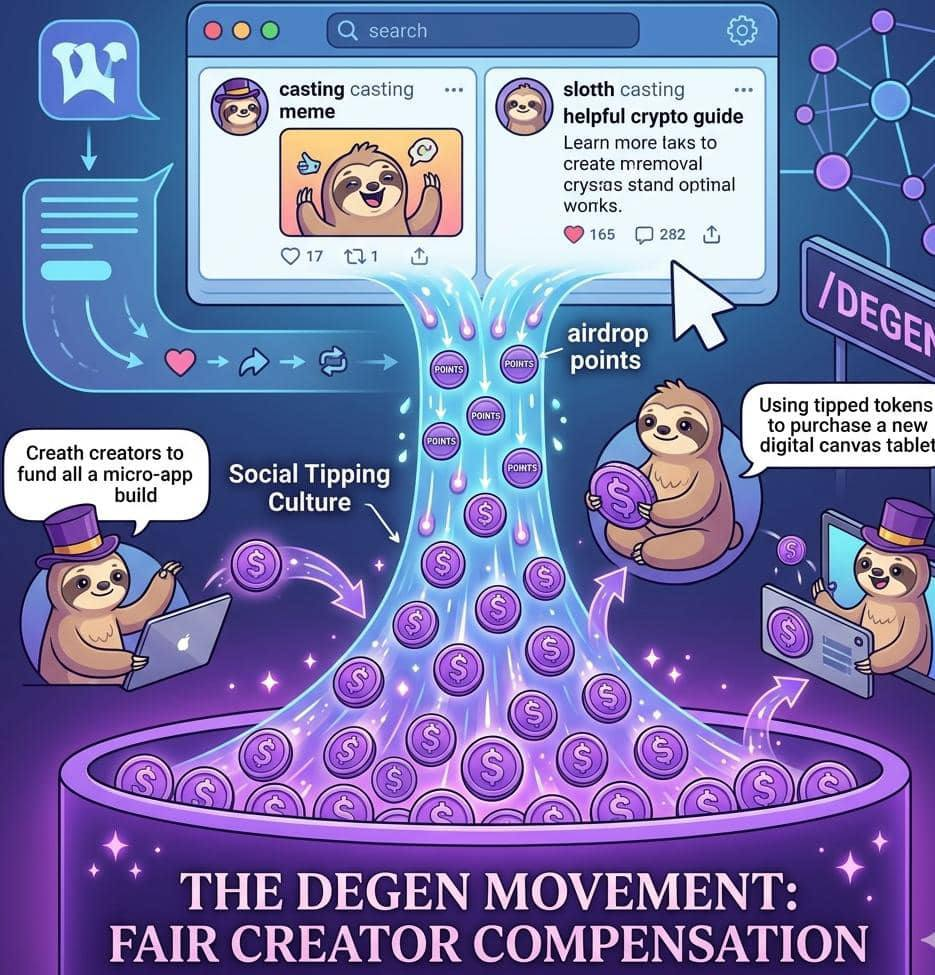

Origins & Philosophy
How a Farcaster rewards token became a movement for fair creator compensation.
The story of Degen (DEGEN) began as a simple experiment inside a decentralized social network known as farcaster but quickly grew into a much bigger idea about rewarding people for their contributions online.
To understand this, we need to look at where DEGEN started and what philosophy drove it.
The origin of DEGEN can be traced to the Farcaster ecosystem, especially the popular social app Warpcast.
Warpcast works similarly to social platforms like X (Twitter):
- Users post messages called casts
- People reply, like, and share posts
- Communities form around channels
One of these channels was called "/degen."
This channel became a gathering place for crypto enthusiasts who enjoyed:
- memes
- experimental ideas
- discussions about crypto culture
Eventually, the community wanted a way to reward people who made the best posts and contributions.
In January 2024, the DEGEN token was launched as a community reward token for people active in the /degen channel.
Instead of a traditional system where platforms control everything, DEGEN introduced a new idea: Let the community reward itself.
Here's how it worked:
- Active users received airdrop points.
- Those points converted into $DEGEN tokens.
- Users could tip other creators for great content.
For example:
- Someone writes a helpful crypto guide
- Someone posts a funny meme
- Someone shares useful tools
Other community members could tip them $DEGEN as appreciation.
This created a new kind of internet economy where creators could earn directly from the community.
The deeper philosophy of DEGEN is simple: People who create value online should be rewarded.
On most traditional social media platforms:
- Creators generate content
- Platforms make the money
- Users receive almost nothing
DEGEN tried to change that.
With DEGEN:
- The community owns the culture
- The community distributes rewards
- The community grows the ecosystem
This idea is often called social driven token incentives.
Instead of corporations deciding who gets paid, the community decides.
At first, DEGEN looked like just another meme coin.
But the community quickly turned it into something bigger.
What started as a fun experiment became:
- A creator reward system
- A community economy
- A social tipping culture
People began to see DEGEN as a movement for fair creator compensation, where online contributions could finally have real value.
Thousands of users joined the ecosystem and began:
- tipping posts
- funding creators
- building apps and tools
Over time, the project even expanded beyond tipping into a broader ecosystem and blockchain infrastructure.
The word "degen" originally came from crypto slang meaning "degenerate trader," someone who takes big risks in crypto.
But the community turned the term into something positive.
In the DEGEN ecosystem, a "degen" often represents someone who:
- experiments with new ideas
- supports builders early
- enjoys internet culture and memes
- believes in open communities
This culture helped DEGEN grow fast because people felt like they were part of a shared movement.
